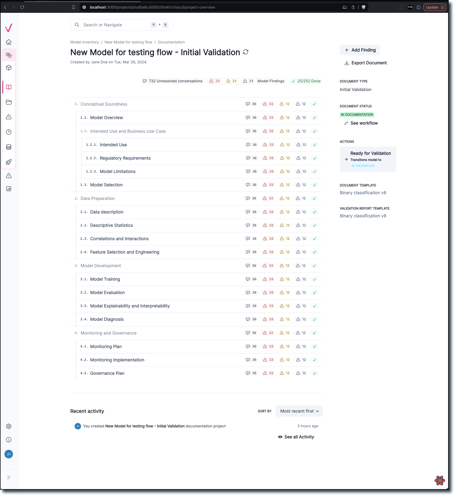
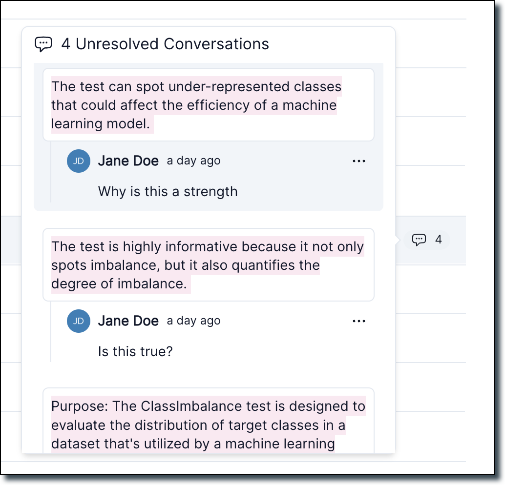

May 22, 2024
Release highlights
New introductory notebook for model developers
Our new end-to-end notebook gives you a full introduction to the ValidMind Developer Framework. As a model developer, you can use this notebook to learn how the end-to-end documentation process works, based on common scenarios you encounter in model development settings.
High level sections include:
Initializing the ValidMind Developer Framework
ValidMind’s developer framework provides a rich collection of documentation tools and test suites, from documenting descriptions of datasets to validation and testing of models using a variety of open-source testing frameworks.
Start the model development process with raw data, run out-of-the box tests, and add evidence to model documentation
Learn how to access ValidMind’s test repository of individual tests that you will use as building blocks to ensure a model is being built appropriately. The goal is to show how to run tests, investigate results, and add tests results or evidence to the documentation.
For a full list of out-of-the-box tests, see Test descriptions or try the interactive Test sandbox.
Implementing custom tests
Usually, model developers have their own custom tests and it is important to include this within the model documentation. We will show you how to include custom tests and then how they can be added to documentation as additional evidence.
Finalize testing and documentation
Learn how you can ensure that model documentation includes custom tests and how to make test configuration changes that apply to all tests in the model documentation template. At the end of this section you should have a fully documented model ready for review.
Try it on JupyterHub: ValidMind Introduction for Model Developers¶
Support for external models
You can now run documentation tests without passing a Python-native model object. This change enables you to document:
- Models that are developed in non-Python environments
- Non-standard model interfaces:
- Models deployed as APIs, such as SageMaker model endpoints
- Tools such as Spark where a model is not a typical object that exposes a
predict()interface
To run tests for these models, you typically must load model predictions from a file, dataset, and so on. The new init_model interface does not enforce a Python model object anymore. You only need to pass attributes that describe the model which is required as a best practice for model documentation.
Initializing an external model
Since there is no native Python object to pass to init_model, you instead pass attributes that describe the model:
# Assume you want to load predictions for a PySpark ML model
model_attributes = {
"architecture": "Spark",
"language": "PySpark",
}
# Or maybe you're loading predictions for a SageMaker endpoint (model API)
model_attributes = {
"architecture": "SageMaker Model",
"language": "Python",
}
# Call `init_model` without passing a model. Pass `attributes` instead.
vm_model = vm.init_model(
attributes=model_attributes,
input_id="model",
)Assigning predictions
Since there’s no model object available, the developer framework won’t be able to call model.predict() or model.predict_proba(). You need to load predictions and probabilities manually. For example:
vm_train_ds.assign_predictions(
model=vm_model,
prediction_values=prediction_values,
prediction_probabilities=prediction_probabilities,
)You can proceed to run tests on your data as you would under normal conditions, without needing to modify any other parts of your code.
Custom metric function decorator
We introduced a new metric decorator that turns any function into a ValidMind Metric that you can use in your documentation.
Custom metrics offer added flexibility. They allow you to extend the library of default metrics provided by ValidMind which enables you to document any type of model or use case.
This new decorator simplifies creating and using custom metrics by almost completely eliminating the boilerplate code required to define and register a custom metric.
Try it on JupyterHub: Implement custom tests
New documentation overview page
Our new documentation is designed to help you find the information you need more quickly. Now more distinct from the Model Details page, the new overview page provides easier navigation and enhanced data visualization to better understand the progress of the documentation stage.

Documentation outline page with conversations
We created a new documentation outline page which replaces the existing project overview page. This page shows a section-by-section outline of your project’s documentation:
It also includes a count of every unresolved conversation within each section. From here, you can hover over the chat icon to see a preview of all unresolved conversations. Click a chat icon to jump to a conversations, or resolve conversations directly from the popup.

Add business unit and risk area at organization setting
New features have been added to the organization page, allowing users to manage business units and risk areas more effectively. You can now add and remove business units and risk areas directly within the organization settings.
Added Generate with AI button to the text editor
Our new Generate with AI button is now available when you edit text blocks in model documentation or model validation reports. This button replaces the old button that was used to AI-generate content.
Clicking on Generate with AI pops up a modal showing the AI content generation:

Here, you can choose to Accept Text or Try Again:

New documentation template editor
This update allows you to edit documentation templates visually, eliminating the need to manually edit YAML files. Add, remove, and rename sections with the new edit.r
Key features:
Enhanced template setting page
- The edit button next to the version dropdown is now hidden.
- A new edit button is displayed above the accordions. Clicking this button activates the edit mode for the accordion.
Edit mode functionality
- In edit mode, you see a cancel button to exit edit mode and a button to publish a new version of the template with the current changes.
- You can edit section titles when the accordion is in edit mode.
- You can insert new sections before or after an existing section or insert a sub-section.
- You can remove sections, with a confirmation alert to ensure the action.
This new visual editing interface streamlines the template editing process, making it more intuitive and user-friendly.
Better UI for workflow customization
Our revamped workflow UI enables more granular management of model and documentation lifecycles and deep integration with model inventory attributes.
The new workflows UI includes the following features:
Ability to require a user action (approve, reject, request changes, etc.) before updating the status of a resource. The user action is presented to relevant users as an action button.
Ability to define the conditions that need to be met before allowing state transitions on a workflow. These conditions are evaluated from attribute values of the inventory model.
Support for approval steps. Approval steps allow you to define the model attribute where a list of approvers needs retrieval and specify the percentage of approvals needed for a successful approval.
Approval steps allow defining approved and rejected outcomes.
Enhancements
Support adding new extra columns on the fly
Added support for two new VMDataset methods
add_extra_column() and get_extra_column()
add_extra_column()
You can now register arbitrary extra columns in a dataset when a test needs to compute metrics outside of the existing sets of columns (features, targets, predictions). An example is when credit risk-related metrics require access to a list of scores computed from predictions. In this case, there needs to be an extra column called scores that is used for computing the metrics.
example usage:
python
# init your dataset as usual
vm_train_ds = vm.init_dataset(
dataset=train_df,
input_id="train_dataset",
target_column=customer_churn.target_column,
)
# generate scores using a user defined function:
scores = compute_my_scores(x_train)
# assign a new "scores" column to vm_train_ds:
vm_train_ds.add_extra_column("scores", scores)This function throws an error if no column values are passed:
python
vm_train_ds.add_extra_column("scores")
ValueError: Column values must be provided when the column doesn't exist in the datasetYou can use init_dataset with a dataset that has precomputed scores:
>
train_df.columns
index(
['CreditScore',
'Gender',
'Age',
'Tenure',
'Balance',
'NumOfProducts',
'HasCrCard',
'IsActiveMember',
'EstimatedSalary',
'Exited',
'Geography_France',
'Geography_Germany',
'Geography_Spain']
,
dtype='object')>
train_df["my_scores"] = scores
>
train_df.columns
index(
['CreditScore',
'Gender',
'Age',
'Tenure',
'Balance',
'NumOfProducts',
'HasCrCard',
'IsActiveMember',
'EstimatedSalary',
'Exited',
'Geography_France',
'Geography_Germany',
'Geography_Spain',
'my_scores']
,
dtype='object')Make sure you set the feature_columns properly:
python
vm_train_ds = vm.init_dataset(
dataset=train_df,
input_id="another_ds",
feature_columns=[
"CreditScore",
"Gender",
"Age",
"Tenure",
"Balance",
"NumOfProducts",
"HasCrCard",
"IsActiveMember",
"EstimatedSalary",
"Exited",
"Geography_France",
"Geography_Germany",
"Geography_Spain"
],
target_column=customer_churn.target_column,
)Then call add_extra_column() to register the extra column:
>
another_ds.add_extra_column(column_name="my_scores")
Column my_scores exists in the dataset, registering as an extra columnget_extra_column()
You can use this inside a test to retrieve the extra column values. Example:
python
scores = self.inputs.dataset.get_extra_column("scores")Ability to compose a metric by combining
ValidMind now supports the ability to compose multiple Unit Metrics into complex outputs.
These composite metrics can be logged as a single result. You can use this result as a content block in your documentation. The result automatically updates when you re-run the documentation test suite.
Define and implement required text data validation tests
The following tests for text data validation have been added:
- Validmind.
data_validation.nlp.LanguageDetection - Validmind.
data_validation.nlp.Toxicity - Validmind.
data_validation.nlp.PolarityAndSubjectivity - Validmind.
data_validation.nlp.Sentiment
To test run notebook: rag_langchain_demo.ipynb
Metric decorator should work with test providers
Adding support for functional metrics for internal tests and test providers
Continuing our efforts to simplify the process for getting your custom code working in ValidMind, we now support functional metrics. Functional metrics are tests that can be defined as pure functions without any boilerplate.
See how this works and more in our updated tutorial on custom test providers.
Support for metadata in new metric decorator
Adding new decorators to support task type and tag metadata in functional metrics
Here is an example:
python
# Copyright © 2023-2024 ValidMind Inc. All rights reserved.
# See the LICENSE file in the root of this repository for details.
# SPDX-License-Identifier: AGPL-3.0 AND ValidMindCommercial
from sklearn.metrics import accuracy_score
from validmind import tags, tasks
@tasks("classification")
@tags("classification", "sklearn", "accuracy")
def Accuracy(dataset, model):
"""
calculates the accuracy of a model
"""
return accuracy_score(dataset.y, dataset.y_pred(model))
# The above decorator is syntactic sugar for the following:
Accuracy.__tags__ = ["classification"]
Accuracy.__tasks__ = ["classification", "sklearn", "accuracy"]Review credit scorecard notebook
This PR adds support for assigning prediction_probabilities to assign_predictions.
This allows:
- Assign prediction values and probabilities that have been computed outside ValidMind (VM).
- Incorporate prediction values and probabilities from datasets that already have prediction columns.
- Automate the assignment of prediction values and probabilities within VM.
Add risk areas from the organization settings page
You can now add risk areas from the organization settings page.
https://github.com/validmind/frontend/assets/68367753/0c7cad73-39eb-482c-a281-aef7edcec54f
Add business units from the organization settings page
You can now add new business units from the organization settings page.


Remove business units from the organization settings page
You can now remove business units from the organization settings page.
Remove risk areas from the organization settings page
You can now remove risk areas from the organization settings page
Add risk areas from the organization settings page
You can now add risk areas from the organization settings page.
https://github.com/validmind/frontend/assets/68367753/0c7cad73-39eb-482c-a281-aef7edcec54f
Add business units from the organization settings page
You can now add new business units from the organization settings page.
Remove business units from the organization settings page
You can now remove business units from the organization settings page.
Ability to associate a finding with a documentation section
You can now associate model findings with sections within your model documentation.
Doing this allows you to track findings by severity, section-by-section in the documentation overview page.
you can see total count of findings
You can see the count of the total number of findings at the top of the documentation overview page.
You can also see individual counts per section. You may hover over the finding icon in each section and view related findings. Click on one to jump to it.
https://www.loom.com/share/2c3e2ebc3ae94cfeb23b86af2cddf697
Remove risk areas from the organization settings page
You can now remove risk areas from the organization settings page
Added section statuses to model documentation and overview page
Added a status picker
Added a status picker to each section of the model documentation page. This allows you to set whether the section is In Progress or Done.
Documentation overview page
The documentation overview page has a total count of how many sections are completed. It includes a checkmark indicating the section is Done.
Added feature to specify a template for rich text custom fields
https://app.shortcut.com/validmind/story/4186/documentation-as-a-customer-admin-i-am-able-to-create-a-custom-field-that-supports-rich-text-editor-format-and-i-am-able
Validation report overview
Created a new validation report overview page
This page shows a section-by-section outline of the model’s validation report, including a total compliance summary for all risk areas associated with the model.
You may hover over any section in the report outline to view the current compliance status in the document section.
The new validation report page also adds an Add_Finding button.
Vendor info during inventory model creation and revised inventory model filters
Added the ability to flag models as Is Vendor Model and specify a vendor name.
Added Vendor Model as a filtering flag.
Improved the look and functionality of model inventory filtering.
Display group information for inventory models
Admin users can now modify the group the Inventory_Model belongs to
Bug fixes
Missing required field card view
Added a tooltip for required missing fields on InventoryModel card view
Template bug fixes
Validate when a template has duplicate section IDs
Template bug fixes
Validate when a template has duplicate section IDs
Documentation
Updated the about section to break down the articles into new categories
About valid mind
We’ve revamped our documentation for a cleaner, more intuitive experience. The update features a brand new about section:
- Product overviews and our glossary now live here under features.
- releases have been moved here as well.
- Important documents such as terms are under fine print.
Contributing
Under this section you also find a brand new set of guides on contributing. Learn how to engage with the valid mind community, read about our brand voice and vision, and more.
- the valid mind community: You’re part of the valid mind community. Come learn and play with us.
- valid mind style guide: Check out the first official version of the valid mind style guide.
First draft for sandbox instructions
We added getting started information for the new ValidMind sandbox environment. You use the sandbox to gain hands-on experience and explore what ValidMind has to offer.
The sandbox mimics a production environment. It includes comprehensive resources such as notebooks with sample code you can run, sample models registered in the model inventory, and draft documentation and validation reports.
Most of our model documentation features are available for you to test in the sandbox. This includes:
- automated model testing & documentation
- preparing model validation reports
- large language model (
LLM) support
These features provide a rich context for testing and evaluation. You can use realistic models and datasets without any risk to your production environment.
Add quickstart video to the docs site
A new three-minute quickstart video
Our new QuickStart video walks you through documenting a model with ValidMind.
we demo how to run our QuickStart notebook on Jupyter Hub. You learn how to work with model documentation on the ValidMind platform.
Quickstart docs site improvements
Reworked our quickstart experience
We reworked our quickstart experience to shorten the number of clicks it takes to get you started. You can now access the quickstart from the homepage or our docs site. We direct you to the preferred Jupyter_Hub version right away.
Valid mind style guide
ValidMind style guide & about section
about valid mind
We’ve revamped our documentation for a cleaner, more intuitive experience. The new about section includes:
- What is ValidMind? serves as the landing page for this section.
- Product overviews now live here under
features. - Tools such as the new style guide, the product glossary, our data privacy policy, and our software license agreement live here under
references. Releaseshave been moved here as well.
valid mind style guide
Check out the first official version of the ValidMind style guide
- Learn about the ValidMind voice
- Understand our shared vision and goals
- See our references for formatting conventions
Add more contextual information to Jupyter notebooks
Many of our Jupyter notebooks have received improvements to make them easier to consume and more standalone:
- Introductions now include more contextual information
- A new table of contents makes notebooks easier to navigate
- Key concepts are explained in the context where you might need that information
- Next steps make it easier to find additional learning resources